Manual de pruebas Módulo de Operaciones (control de vueltas)
Guía paso a paso para los usuarios de prueba: alta de unidades, geocercas, operaciones, alertas y reportes. Las novedades de esta versión están marcadas con NUEVO.
Versión del sistema
Rama nuevo-tema · entrega del 12 de octubre de 2026
Interfaz
Interfaz nueva (v2). El panel de administración conserva la interfaz clásica.
Público
Usuarios de prueba (supervisores de operación) y administrador de la plataforma
Cómo reportar errores
Al final de cada capítulo hay una lista «Qué probar». Reporta: qué hiciste, qué esperabas, qué pasó, hora, vehículo y, si es posible, una captura.
Contenido
Antes de empezar: qué es una operación y cómo se cuenta una vuelta
Administrador: alta de unidades, usuario y permiso «Operaciones»
Grupos de vehículos
Geocercas con categoría NUEVO
Crear y editar una operación NUEVO
Seguimiento: pestaña «En vivo» NUEVO
Revisión: pestaña «Vueltas», detalle y justificación de paradas NUEVO
Recalcular vueltas y catálogo de motivos NUEVO
Alerta «Parada en operación» NUEVO
Reportes 910 a 913 NUEVO
Otras mejoras de esta entrega (mapa, historial, monitor)
Lista general de verificación
1. Antes de empezar
Una operación es un ciclo de trabajo repetitivo entre dos tipos de punto. El sistema cuenta cada ciclo como una vuelta y mide cuánto tardó cada parte.
Tipo de operación
Puntos
Qué cuenta como vuelta
Acarreo (carga / descarga)
Una o varias geocercas de categoría Carga y una o varias de Descarga
Salir de carga → llegar a descarga (ida) → salir de descarga → volver a carga (vuelta)
Ruta (inicio / fin) NUEVO
Geocercas de categoría Inicio de ruta y Fin de ruta
Mismas reglas, con los nombres inicio / fin
Conceptos que verás en pantalla:
Tramo: cada mitad de la vuelta (ida o vuelta). Tiene inicio, fin, duración y distancia.
Permanencia mínima: segundos que el vehículo debe estar dentro de la geocerca para que cuente como «llegó». Evita que un paso rozando el borde cuente como visita.
Parada: el vehículo estuvo quieto más del umbral configurado (por defecto 60 s) dentro de un tramo. Puede ser autorizada (cayó en una geocerca de categoría grifo, taller o descanso), no autorizada o dato dudoso (hubo un salto de señal).
Vuelta incompleta: el ciclo se cerró sin completar los dos tramos (por ejemplo, volvió a descarga sin pasar por carga, o se pasó el tramo máximo en horas).
Turno: franja horaria con nombre (Día, Noche). Los turnos que terminan a una hora menor que la de inicio cruzan la medianoche.
Orden recomendado para configurar desde cero: unidades y usuario (admin) → grupo de vehículos → geocercas con categoría → operación → alerta → reportes. Los capítulos siguen ese orden.
2. Administrador: unidades, usuario y permiso
Estas tareas se hacen en el panel de administración (interfaz clásica), con la cuenta de administrador.
2.1 Alta de una unidad (vehículo con GPS)
Entra en Admin → Vehículos. Arriba a la derecha está el botón + (Agregar nuevo).
En la pestaña Principal escribe el Nombre (normalmente la placa, por ejemplo CFX-784) y el IMEI del equipo GPS. Marca Activo.
En la pestaña Usuarios asigna la unidad al usuario que la va a ver (el supervisor de la operación).
En Sensores revisa que exista el sensor de encendido (ignición). El módulo de Operaciones lo usa para distinguir «detenido con motor encendido» (ralentí) de «motor apagado», y el reporte de horas trabajadas suma horas de motor a partir de él. Si la unidad tiene sensor de horas de motor o de combustible, también se usan.
Guardar. La unidad aparece en el mapa del usuario en cuanto transmite.
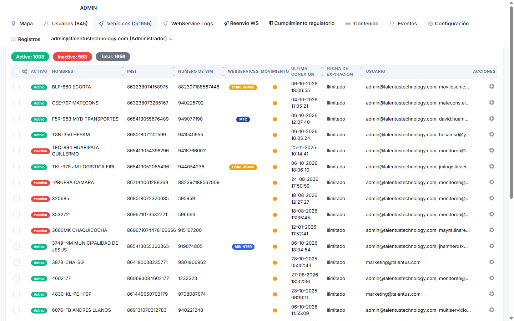
Admin → Vehículos. El botón + abre el alta.
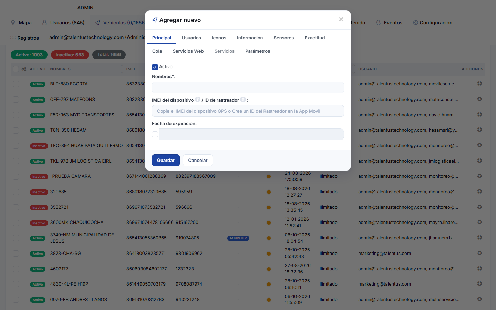
Alta de vehículo: nombre, IMEI y pestañas de usuarios, iconos, sensores, etc.
2.2 Dar el permiso «Operaciones» al usuario NUEVO
El módulo no se ve hasta que el administrador lo activa por usuario. Sin el permiso no aparece la entrada «Operaciones» en el menú lateral ni los reportes 910 a 913.
Admin → Usuarios. Busca al usuario por correo en el cuadro «Buscar».
En la columna Acciones, pulsa el engranaje y elige Editar.
Ve a la pestaña Permisos y busca la fila Operaciones. Marca las tres casillas: ver, editar y eliminar. Con solo «ver», el usuario consulta vueltas y reportes pero no crea ni modifica operaciones.
Guardar.
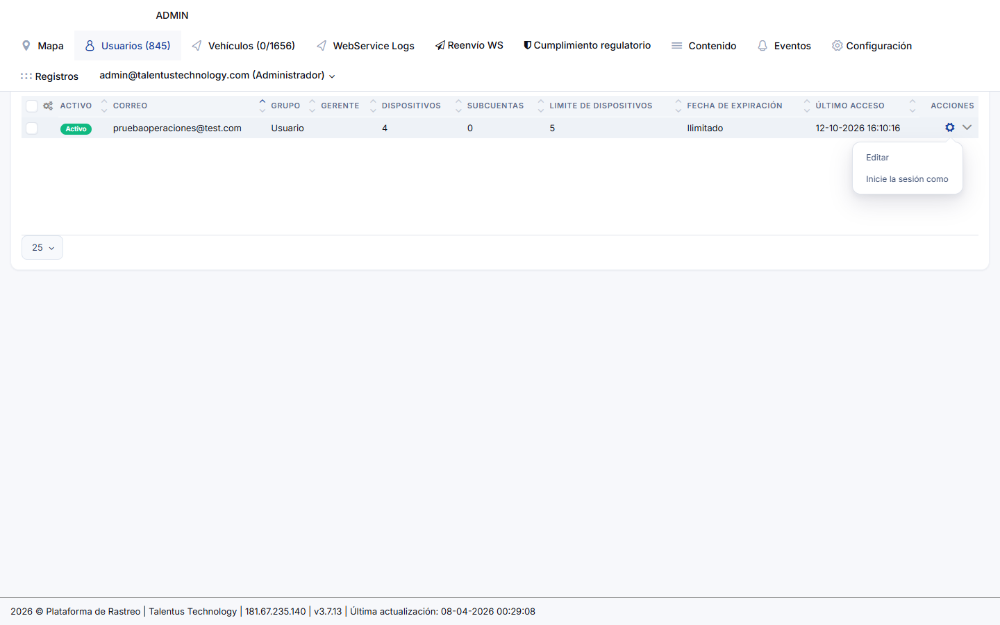
Admin → Usuarios: el engranaje de la fila abre Editar y «Inicie la sesión como».
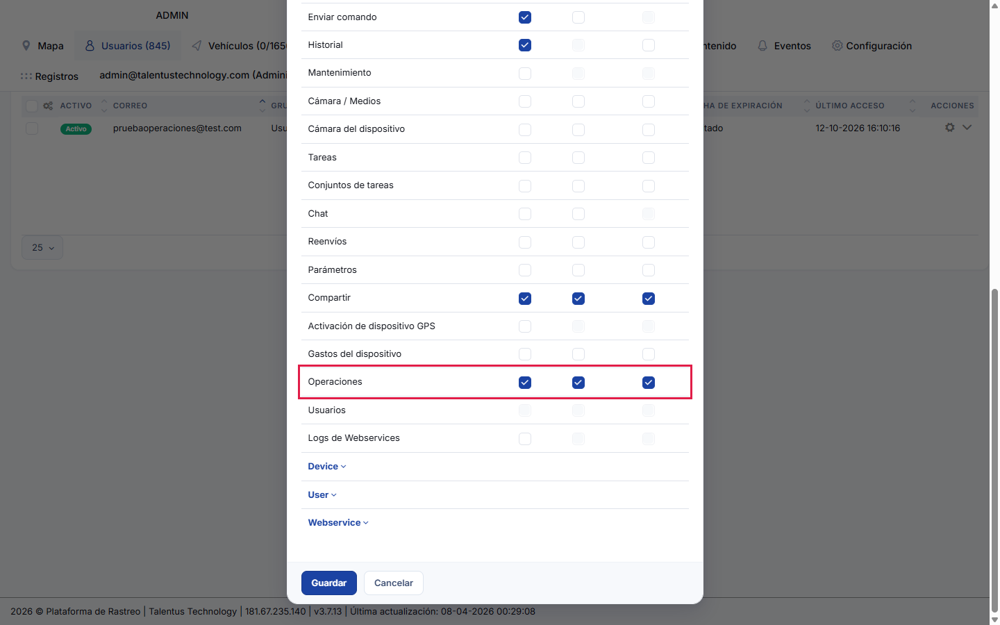
Pestaña Permisos: la fila «Operaciones» (recuadro rojo) es nueva.
2.3 Entrar como el usuario
Cada usuario ve solo sus operaciones. Para revisar lo que ve un cliente, el administrador usa Inicie la sesión como desde el mismo menú de la fila y confirma con Sí. Para volver a la cuenta de administrador, cierra sesión: la plataforma regresa automáticamente a la sesión anterior.
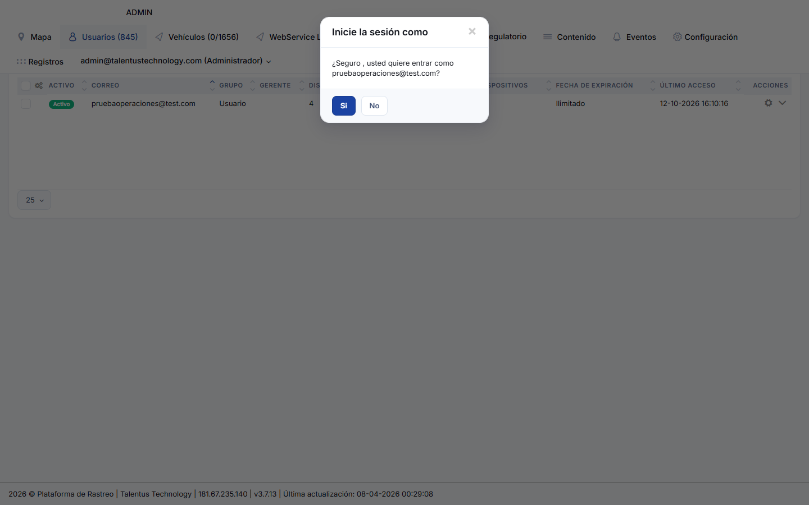
Confirmación antes de entrar como el usuario.
Qué probar (admin)
Un usuario sin el permiso no ve «Operaciones» en el menú ni los reportes 910–913.
Con solo «ver», los botones Nueva operación / Editar / Eliminar no están disponibles.
Al cerrar sesión desde «entrar como», vuelves al admin.
3. Grupos de vehículos
Una operación se asigna a un grupo de vehículos, no a vehículos sueltos. Todos los vehículos del grupo participan en la operación; si agregas o quitas uno del grupo, la operación lo toma en el siguiente minuto.
En el Mapa (menú lateral, primer icono), el panel izquierdo lista la flota. Pulsa el icono de vista por grupos (segundo botón junto a «Flota») para ver los vehículos agrupados.
En la cabecera de cada grupo hay un menú ⋮ con Agregar nuevo, Editar y Eliminar.
En el modal escribe el Título y marca los vehículos que pertenecen al grupo. Guardar.
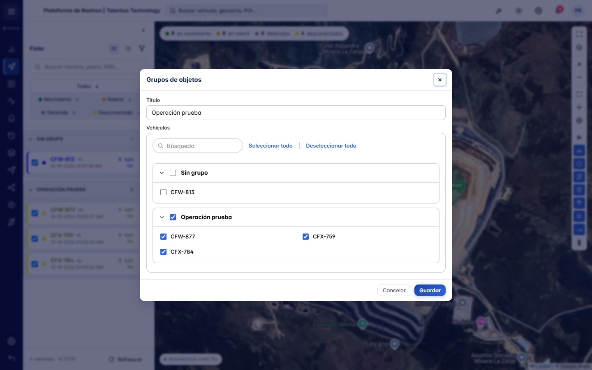
Modal «Grupos de objetos»: título y vehículos del grupo.
Regla nueva: un grupo que está asignado a una operación no se puede eliminar. El sistema lo rechaza con un mensaje. Primero cambia el grupo de la operación (o elimina la operación) y después borra el grupo.
Qué probar
Crear un grupo, asignarlo a una operación e intentar eliminarlo: debe salir el mensaje de bloqueo.
Agregar un vehículo al grupo de una operación activa: en «En vivo» debe aparecer en un par de minutos.
4. Geocercas con categoría NUEVO
Las geocercas ahora tienen un campo Categoría. La categoría le dice al módulo de Operaciones para qué sirve cada zona:
Categoría
Uso
Carga / Descarga
Puntos de una operación de acarreo.
Inicio de ruta / Fin de ruta
Puntos de una operación de tipo ruta.
Grifo
Zona de abastecimiento. Las paradas dentro cuentan como autorizadas, y alimenta el reporte «Abastecimiento» y el descuento de horas por abastecimiento.
Taller
Paradas autorizadas (mantenimiento).
Descanso
Paradas autorizadas (comedor, cola de espera, estacionamiento de descanso).
Sin categoría
Geocerca normal; no participa en operaciones.
4.1 Crear una geocerca
En el menú lateral entra en Geocercas (o en el Mapa, panel «Geocercas»). Pulsa el botón +.
Elige la forma: Polígono, Círculo o Corredor. Para puntos de carga y descarga suele bastar un círculo de 80 a 120 m centrado en la zona de maniobra.
Dibuja sobre el mapa. Al terminar se abre el formulario.
Completa Nombre, Color, Grupo (opcional) y la Categoría. Guarda.
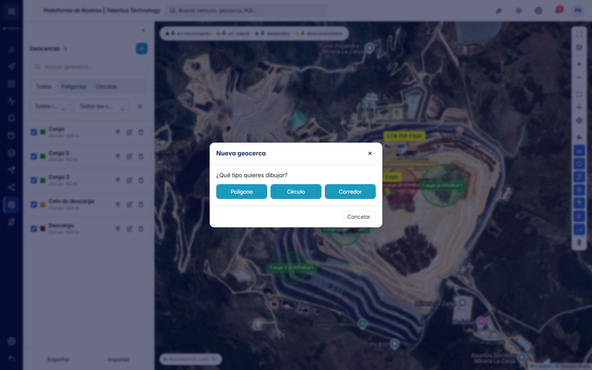
Nueva geocerca: elegir polígono, círculo o corredor.
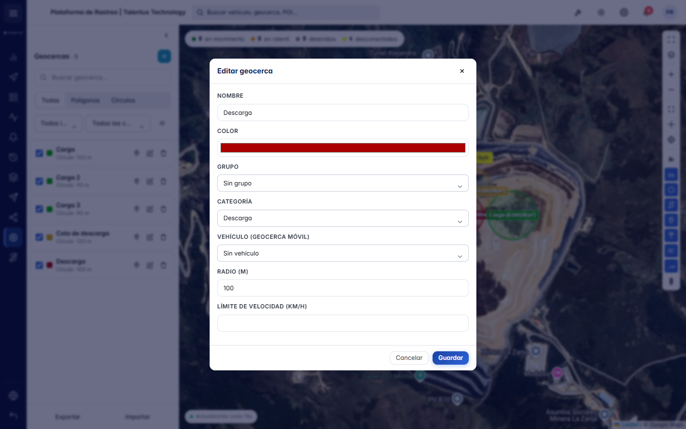
Formulario de la geocerca con el nuevo campo «Categoría».
4.2 Filtrar la lista por categoría
En el panel de geocercas hay un selector «Todas las categorías» que filtra la lista y el mapa. Úsalo para comprobar que todos los puntos de la operación tienen la categoría correcta.
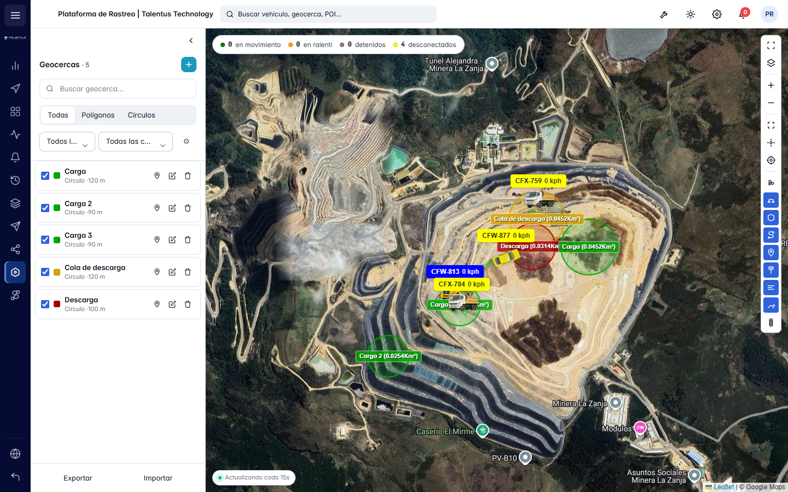
Panel de geocercas con el filtro de categoría y las cinco zonas de la operación de prueba.
Reglas nuevas que debes conocer:
Una geocerca usada como punto de una operación no se puede eliminar. Primero quítala de la operación.
Si editas la forma de una geocerca que es punto de una operación, las vueltas ya calculadas conservan la forma anterior; las nuevas usan la nueva. Si quieres rehacer el pasado con la forma nueva, usa «Recalcular vueltas» (capítulo 8).
Las geocercas móviles (ligadas a un vehículo) no se aceptan como punto de operación.
La categoría también está en la interfaz clásica (Geocercas → Editar) y se exporta e importa con el resto de datos de la geocerca.
Qué probar
Crear, editar y filtrar geocercas por cada categoría.
Intentar borrar una geocerca que es punto de operación: debe aparecer el mensaje de bloqueo.
Exportar e importar geocercas y verificar que la categoría se conserva.
5. Crear y editar una operación NUEVO
Menú lateral → Operaciones → pestaña Operaciones (la tercera). Aquí está la lista de operaciones del usuario y los botones Motivos de parada, Recalcular vueltas y + Nueva operación.
Nombre: como la conoce el cliente (por ejemplo «Acarreo Tajo Norte»).
Tipo de operación: Acarreo (carga / descarga) o Ruta (inicio / fin). Cambia los nombres de los bloques de puntos.
Grupo de vehículos: el grupo del capítulo 3. Debajo se muestra cuántos vehículos tiene.
Carga y Descarga: elige las geocercas. Solo aparecen las que tienen la categoría correspondiente. Con + Agregar punto puedes poner varias (por ejemplo tres frentes de carga y una descarga). La vuelta cuenta con cualquiera de ellas.
Turnos: nombre, hora de inicio y hora de fin. Un turno cuya hora de fin es menor o igual a la de inicio termina al día siguiente (Noche 19:00–07:00). Los turnos no pueden solaparse.
Opciones avanzadas (pulsa para desplegar):
Parada (segundos): a partir de cuántos segundos quieto se registra una parada. Por defecto 60.
Permanencia mínima (segundos): cuánto debe estar dentro de la geocerca para contar la llegada. Por defecto 30.
Tramo máximo (horas): si un tramo dura más, la vuelta se cierra como incompleta (vehículo que se fue a taller, por ejemplo). Por defecto 6.
Paradas autorizadas en geocercas de categoría: grifo, taller, descanso. Una parada dentro de una geocerca de esas categorías no cuenta como no autorizada.
Horas trabajadas: qué se descuenta de las horas de motor en el reporte «Horas trabajadas netas»: abastecimiento, ralentí y paradas no autorizadas.
Operación activa: desmarcada, la operación existe pero no evalúa posiciones.
Guardar. A partir de ese momento cada posición nueva de los vehículos del grupo se evalúa; en un par de minutos «En vivo» muestra el estado.
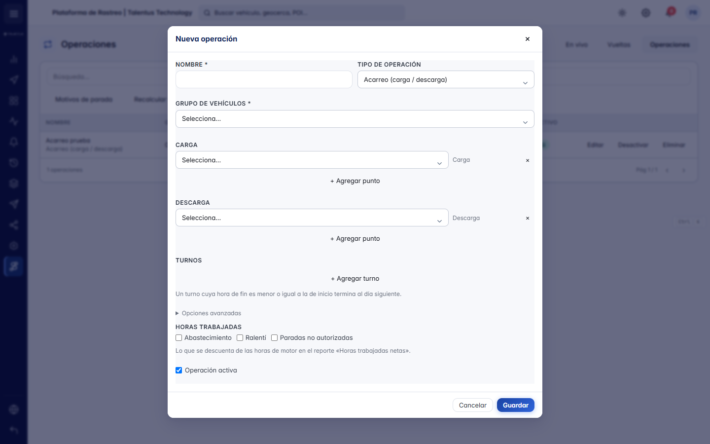
Nueva operación: nombre, tipo, grupo, puntos de carga y descarga, turnos.
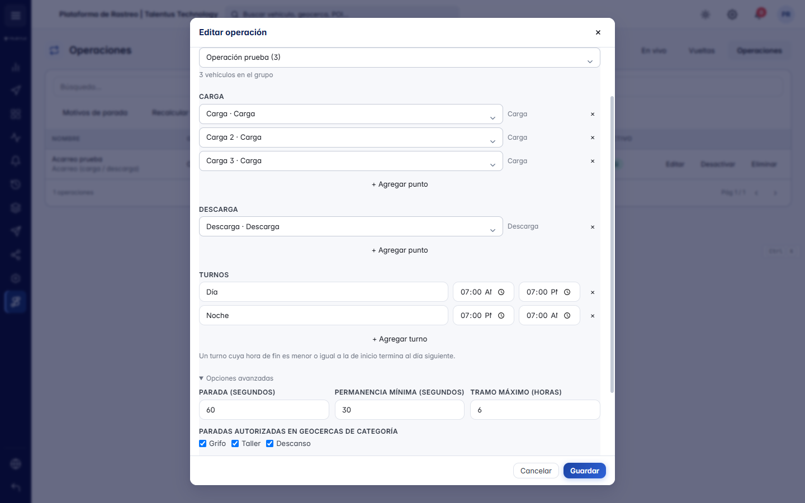
Editar operación: puntos, turnos y opciones avanzadas desplegadas.
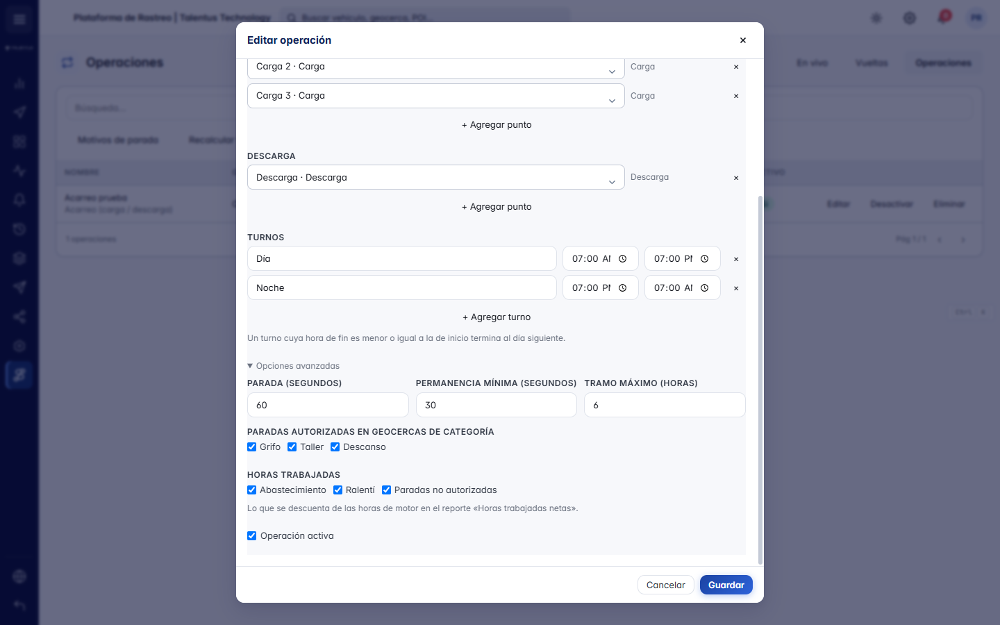
Bloque «Horas trabajadas»: descuentos que aplica el reporte 912.
5.2 Editar, desactivar y eliminar
Editar cambia la configuración para las posiciones futuras. Las vueltas ya calculadas no cambian (usa Recalcular si lo necesitas).
Desactivar deja de evaluar sin perder nada; Activar reanuda.
Eliminar borra la operación y sus vueltas (borrado lógico; pide confirmación).
Qué probar
Crear una operación con un punto de carga y uno de descarga; comprobar que los selectores solo muestran geocercas de esa categoría.
Turnos solapados o grupo sin vehículos: el formulario debe avisar y no guardar.
Cambiar el tipo a «Ruta»: los bloques pasan a Inicio / Fin de ruta.
Desactivar y volver a activar: «En vivo» deja de actualizar y vuelve.
6. Seguimiento: pestaña «En vivo» NUEVO
Es la vista de turno del supervisor. Se actualiza sola cada 20 segundos. Elige la Operación y el día.
Tarjetas: vueltas de hoy, ciclo promedio, vehículos en ciclo y paradas no autorizadas del día.
Tabla, una fila por vehículo: Estado (En carga / Ida / En descarga / Vuelta, y si está detenido cuánto lleva), vueltas del día, duración del último ciclo, tiempo detenido y en ralentí, paradas no autorizadas y hora de la última trama.
Un vehículo sin transmitir conserva su último estado y su «última trama» envejece; así se detecta un GPS apagado.
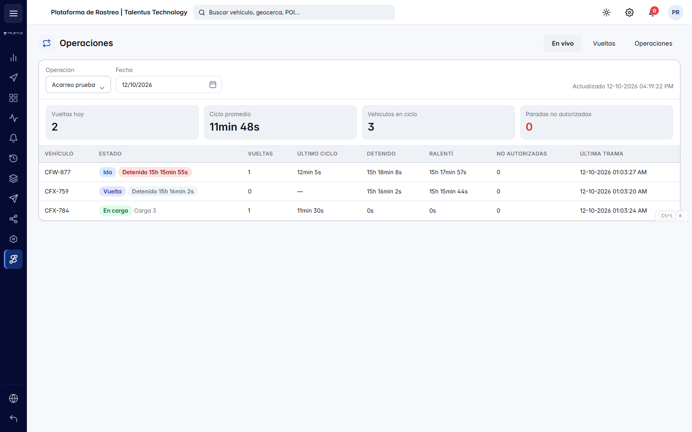
En vivo: tarjetas de resumen y estado por vehículo.
Qué probar
Con un vehículo en movimiento real, seguir el cambio de estado al entrar y salir de carga y descarga (recuerda la permanencia mínima: no cambia al instante).
El contador «Vueltas hoy» debe coincidir con la pestaña Vueltas filtrada al día.
Al cambiar de operación o de día, las cifras cambian.
7. Revisión: pestaña «Vueltas» NUEVO
7.1 Buscar vueltas
Elige Desde y Hasta (fechas), y opcionalmente operación, vehículo y turno.
Marca Solo vueltas con paradas no autorizadas para revisar únicamente las que requieren justificación.
Pulsa Búsqueda. Cada fila es una vuelta: número, vehículo, salida, turno, ciclo total, ida, vuelta, detenido, ralentí, paradas no autorizadas y Estado (Completa, Incompleta, En curso).
Exportar genera el reporte 910 «Control de vueltas» con los mismos filtros, en la misma pestaña.
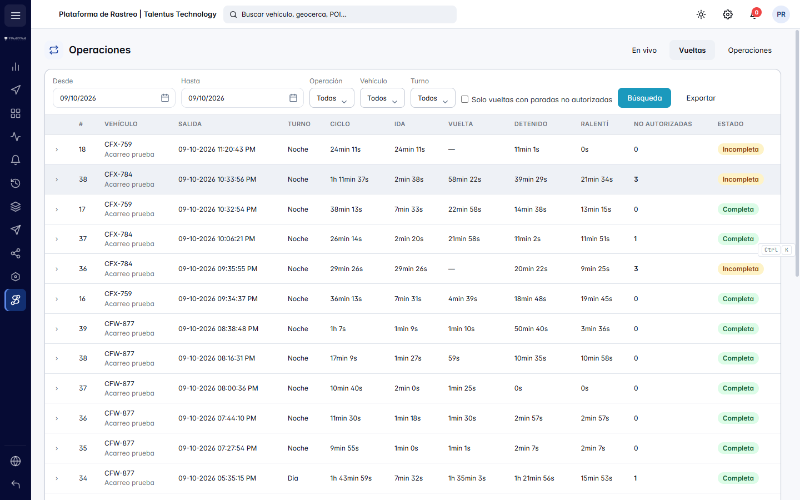
Pestaña Vueltas con filtros y una fila por vuelta.
7.2 Detalle de una vuelta
Pulsa la flecha › de la fila. Se despliegan los dos tramos con inicio, fin, duración, distancia, tiempo «sin datos» (huecos de señal) y el enlace Ver tramo en mapa, que abre el Historial ya posicionado en ese rango. Debajo, la tabla de paradas del tramo: inicio, duración, motor encendido y apagado, geocerca donde cayó, estado y motivo. Las no autorizadas van en rojo.
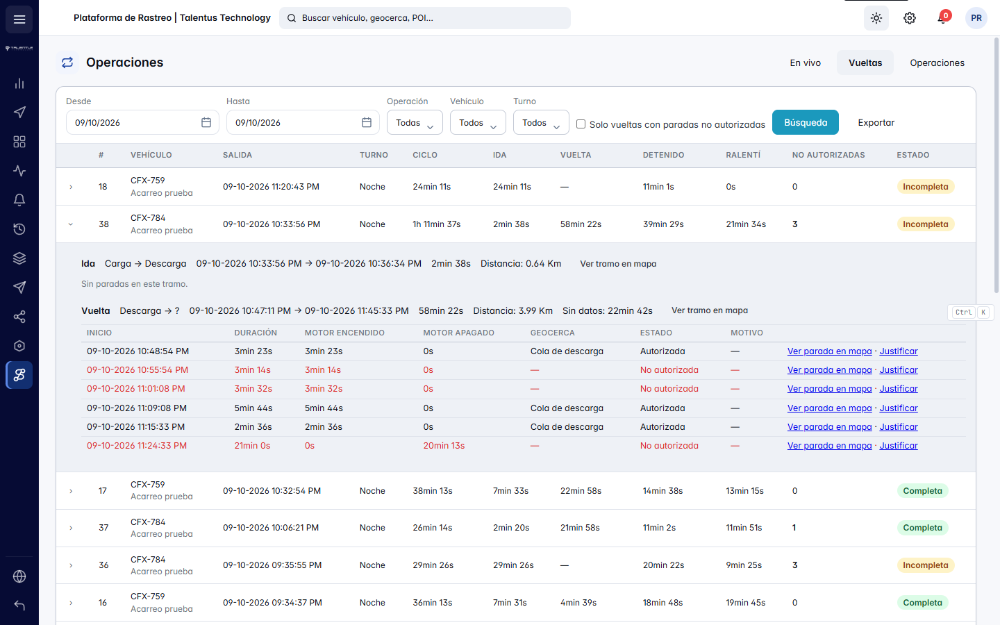
Detalle de la vuelta 38: ida sin paradas y vuelta con seis paradas, tres de ellas no autorizadas.
7.3 Justificar una parada
En la fila de la parada pulsa Justificar.
Elige el Motivo del catálogo (capítulo 8) y, si hace falta, escribe un comentario. Con el motivo «Otro» el comentario es obligatorio.
Guardar. La parada queda con el motivo, quién la justificó y cuándo; el reporte 911 lo muestra.
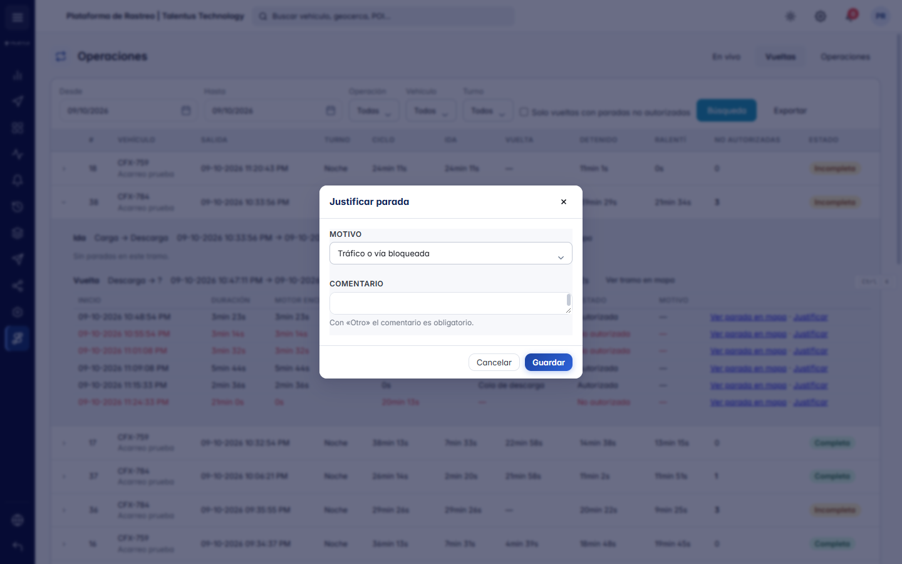
Justificar parada: motivo y comentario.
Qué probar
Las horas de salida y llegada del detalle coinciden con el Historial («Ver tramo en mapa» debe abrir exactamente ese rango).
Las paradas dentro de un grifo, taller o descanso salen como autorizadas.
Una parada justificada muestra el motivo en el detalle y en el reporte 911.
Comparar el número de vueltas de un día con el control manual del cliente y anotar diferencias (vuelta, hora, vehículo).
8. Recalcular vueltas y catálogo de motivos NUEVO
8.1 Recalcular vueltas
Sirve para rehacer el pasado: después de cambiar la forma de una geocerca, los umbrales, los turnos o al crear una operación cuando los vehículos ya llevaban días trabajando.
Pestaña Operaciones → Recalcular vueltas.
Elige la operación, desde el día y, si quieres, solo algunos vehículos.
Ubicación de los puntos: «La vigente en cada momento» respeta la forma que tenía cada geocerca en cada fecha; «La actual» aplica la forma de hoy a todo el rango.
El modal avisa cuántas vueltas se reemplazarán y hasta qué fecha hay posiciones disponibles. Pulsa Recalcular vueltas.
El recálculo se encola y lo ejecuta el servidor en el siguiente minuto. Mientras está pendiente, la pestaña Vueltas muestra un aviso.
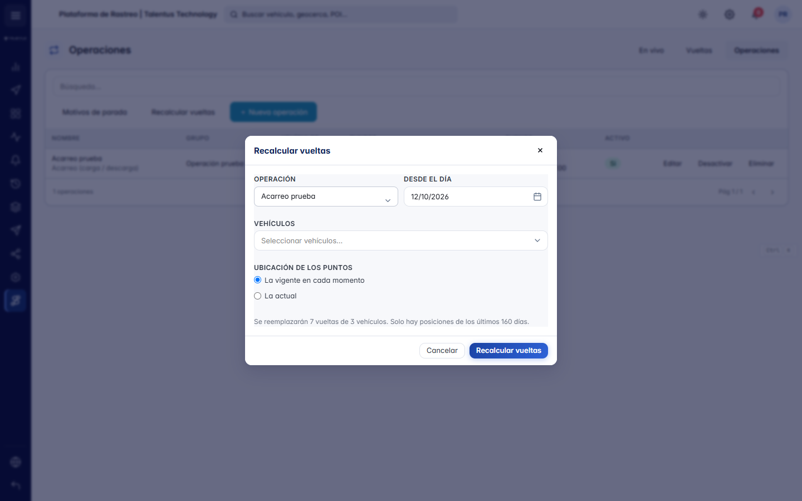
Recalcular vueltas: operación, día de inicio, vehículos y ubicación de los puntos.
Las justificaciones de paradas de las vueltas reemplazadas se pierden al recalcular. Justifica después de recalcular, no antes.
8.2 Catálogo de motivos de parada
Pestaña Operaciones → Motivos de parada. Es la lista que aparece al justificar. Cada motivo tiene un nombre y la casilla Autoriza la parada. El catálogo viene con siete motivos por defecto; puedes renombrarlos, quitarlos o agregar otros.
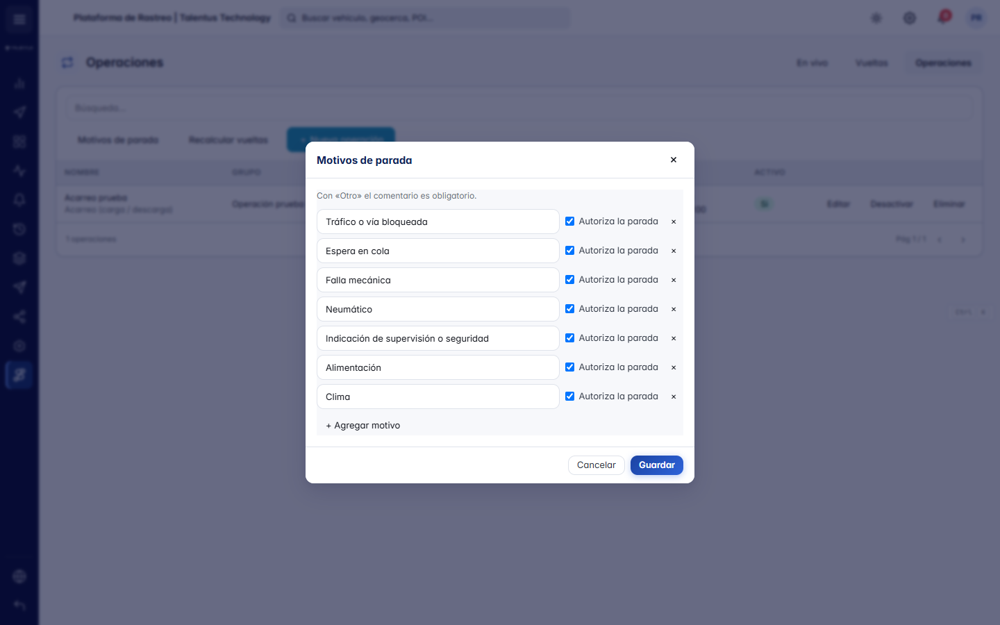
Motivos de parada del usuario.
Qué probar
Recalcular un día conocido y verificar que las vueltas vuelven a salir iguales (o con el cambio esperado si cambiaste algo).
Agregar un motivo nuevo y usarlo al justificar.
9. Alerta «Parada en operación» NUEVO
Avisa en el momento en que un vehículo en tramo (ida o vuelta) se detiene fuera de una zona autorizada más de X segundos. No dispara dentro de carga, descarga, grifo, taller o descanso, ni cuando la operación está inactiva.
Menú lateral → Alertas → Nueva alerta.
Pestaña Vehículos: marca los del grupo de la operación.
Pestaña Tipo: en Disparador elige Parada en operación y define Parada mayor a (segundos). Por defecto 60, que es lo que pidió el cliente.
Pestaña Notificaciones: correo, push, ventana emergente o sonido, como en cualquier alerta.
Crear alerta. Los eventos salen en el panel de Eventos con la operación, el tramo y el número de vuelta.
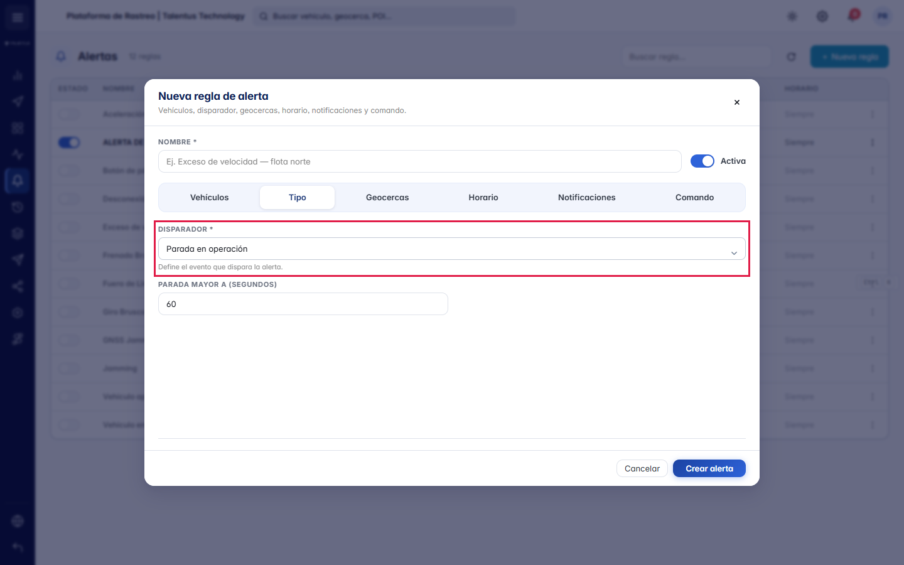
Nueva regla de alerta: disparador «Parada en operación» y umbral en segundos.
Las alertas existentes «Duración de parada» y «Duración de ralentí» siguen funcionando igual y no dependen de la operación.
Qué probar
Un vehículo detenido en ruta más de 60 s genera el evento; dentro del grifo o de la descarga, no.
El evento llega por el canal configurado (correo, push, popup).
10. Reportes NUEVO
Menú lateral → Reportes → +. En el selector Tipo hay cuatro reportes nuevos. Los cuatro aceptan HTML, PDF y CSV, se pueden guardar y programar por correo como cualquier otro.
ID
Reporte
Qué muestra
Parámetros
910
Control de vueltas
Una fila por vuelta: horas de salida y llegada en cada punto, tiempo en carga, ida, tiempo en descarga, vuelta, ciclo total, detenido, ralentí, motor apagado y paradas no autorizadas. Totales por día o por turno (vueltas, viajes, ciclo promedio).
Operaciones, totales por día o turno, solo vueltas con paradas no autorizadas
911
Paradas en operación
Una fila por parada: vuelta, tramo, inicio, duración, ubicación con enlace al mapa, motor, geocerca, estado, motivo y quién justificó.
Operación, solo no autorizadas
912
Horas trabajadas netas
Por día: horas de motor, descuentos activos (abastecimiento, ralentí, paradas no autorizadas), horas netas, combustible consumido y consumo por hora (solo con sensor de combustible).
Operación
913
Abastecimiento
Una fila por visita a una geocerca de categoría «grifo»: entrada, salida y duración, con totales por vehículo.
Ninguno propio
Elige el Tipo; el formulario muestra los parámetros propios del reporte (en la captura, «Operaciones» y «Totales por»).
Marca los Dispositivos y el rango de fechas.
Generar lo abre en pantalla; Guardar lo deja en la lista de reportes guardados para repetirlo.
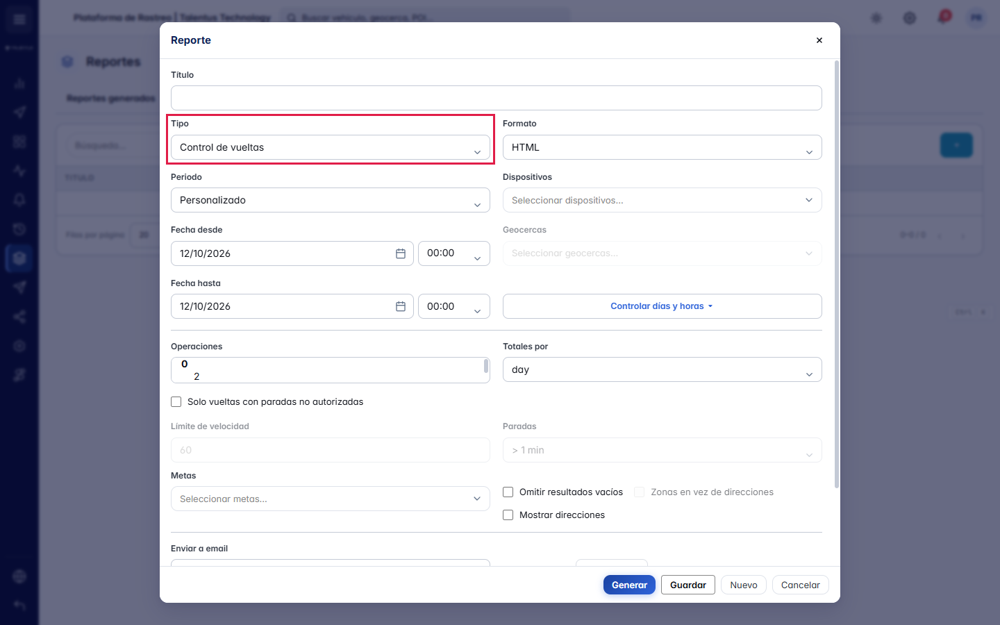
Formulario del reporte con el tipo «Control de vueltas» y sus parámetros.
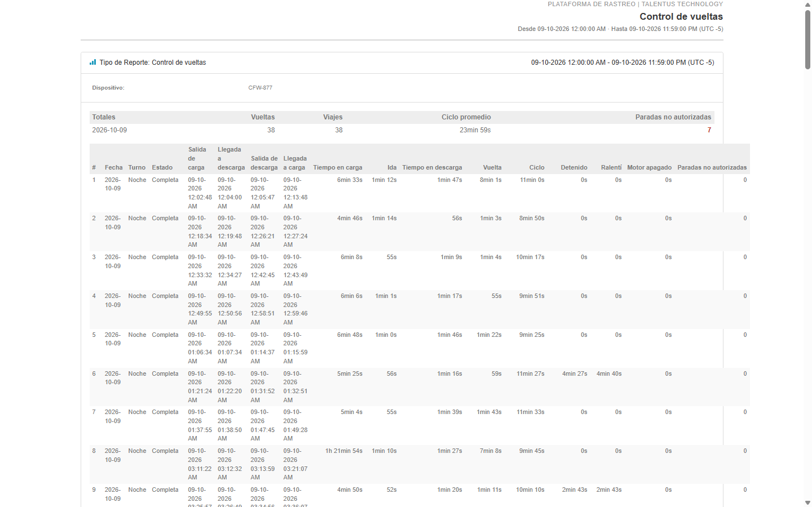
910 Control de vueltas: totales del día y una fila por vuelta.
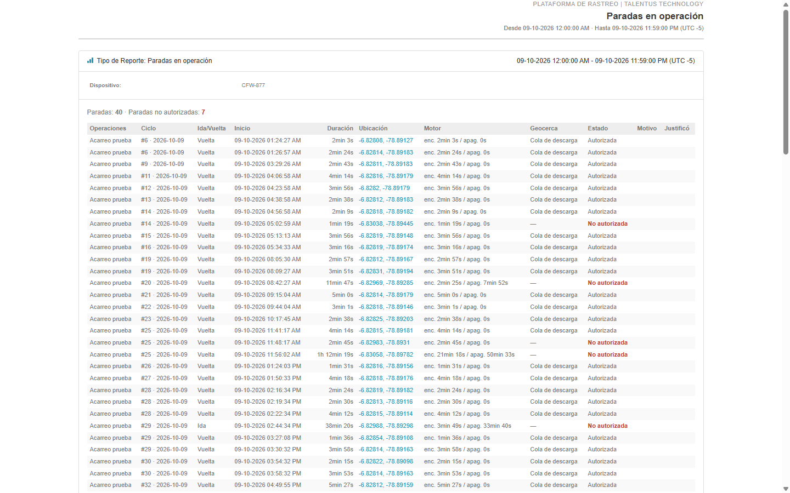
911 Paradas en operación.
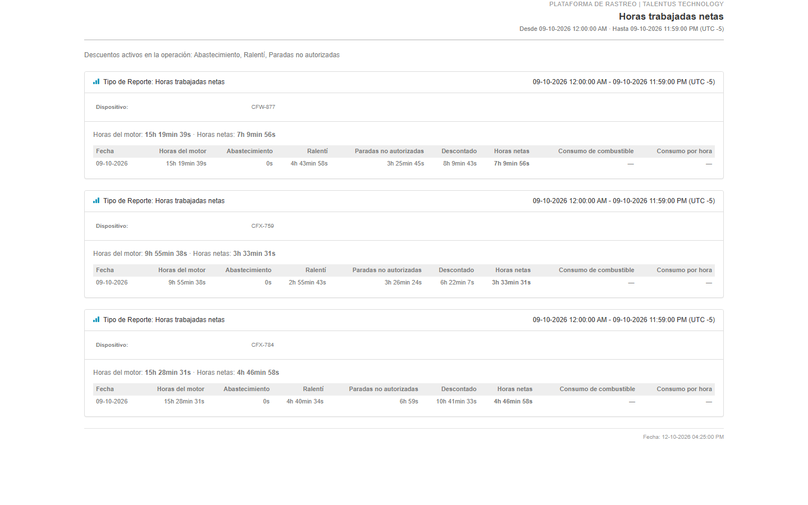
912 Horas trabajadas netas, con los descuentos activos de la operación en la cabecera.
Qué probar
El 910 de un día coincide con la pestaña Vueltas (misma cantidad y mismas horas).
Generar los cuatro en HTML, PDF y CSV; un rango sin datos debe dar un reporte vacío, no un error.
El 913 solo tiene filas si existen geocercas de categoría «grifo».
Programar uno por correo (diario) y comprobar que llega.
11. Otras mejoras de esta entrega
Entran junto con el módulo y conviene probarlas de paso.
Mapa en vivo
Colores de estado unificados con la interfaz clásica (movimiento, ralentí, detenido, desconectado). Una unidad que dejó de transmitir ya no se pinta como si estuviera viva.
Etiqueta fija de cada geocerca con su nombre y tamaño; animación de movimiento del marcador (si el administrador tiene activo el plugin).
Color del marcador por velocidad: el primer tramo de color empieza en 1 km/h, así un vehículo parado no sale «en verde».
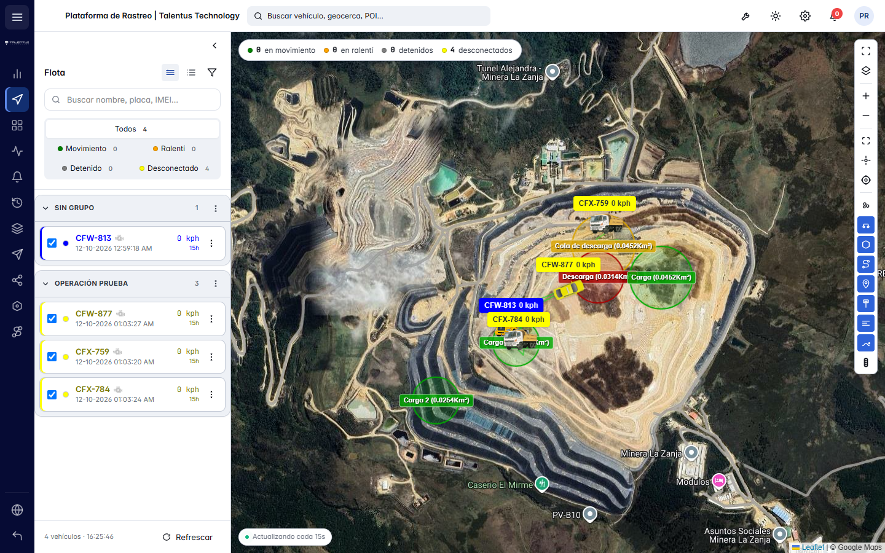
Mapa en vivo con las geocercas de la operación y sus etiquetas.
Historial
El rango admite hora y minuto exactos (HH:MM), sin redondeo a 5 minutos. Los enlaces «Ver tramo en mapa» y «Ver parada en mapa» de Operaciones usan esto.
«Mostrar historial (última hora)» abre la última hora, no el día entero.
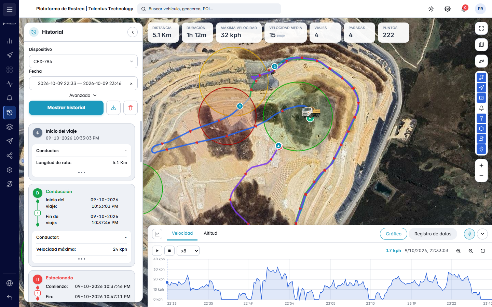
Historial abierto desde «Ver tramo en mapa» con el rango exacto del tramo.
Monitoreo de grupo
Celdas con capas, resplandor del vehículo seleccionado, color por velocidad y animación.
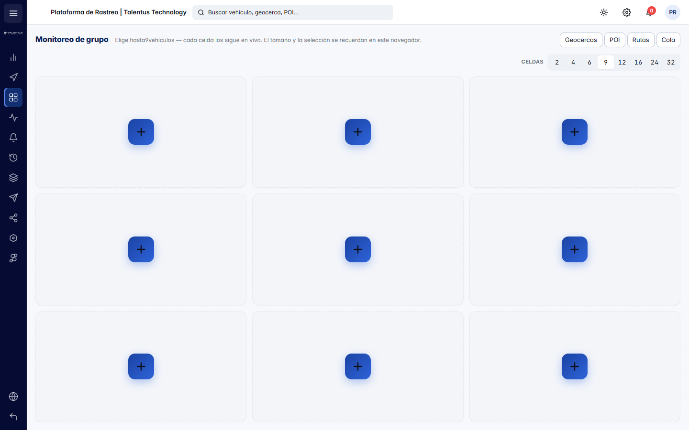
Monitoreo de grupo.
Panel y plugins
El tablero ya no confunde «detenido» con «ralentí» y el modal del tablero abre con contenido.
El plugin del admin «Renovar la fecha de vencimiento de la SIM al renovar la suscripción» ahora funciona; el widget «Eventos recientes» respeta su interruptor.
12. Lista general de verificación
Marca cada punto al terminar. Si algo falla, anota el número del punto en el reporte de error.
El usuario con permiso ve «Operaciones» en el menú; sin permiso, no.
Alta de unidad en admin y aparición en el mapa del usuario.
Grupo de vehículos creado y bloqueado al intentar borrarlo si está en una operación.
Geocercas con categoría: crear, editar, filtrar, bloqueo al borrar puntos en uso, export/import conserva categoría.
Operación creada con puntos, turnos y opciones avanzadas; validaciones de turnos solapados y grupo vacío.
«En vivo» cambia de estado con un vehículo real y las tarjetas cuadran con «Vueltas».
«Vueltas»: filtros, detalle, enlaces al historial con hora exacta, justificación de paradas.
Recalcular un rango y obtener el resultado esperado; aviso de recálculo pendiente.
Alerta «Parada en operación» dispara fuera de zonas autorizadas y no dentro.
Reportes 910–913 en HTML, PDF y CSV; vacíos sin error; 910 coincide con la pestaña Vueltas.
Conteo de vueltas de un día completo comparado con el control manual del cliente.
Mapa, historial y monitoreo: colores de estado, hora exacta, animación.
Datos de la operación de prueba (entorno de pruebas): operación «Acarreo prueba», grupo «Operación prueba» con tres volquetes, puntos Carga / Carga 2 / Carga 3 y Descarga, zona de descanso «Cola de descarga», turnos Día 07:00–19:00 y Noche 19:00–07:00, umbrales 60 s / 30 s / 6 h.